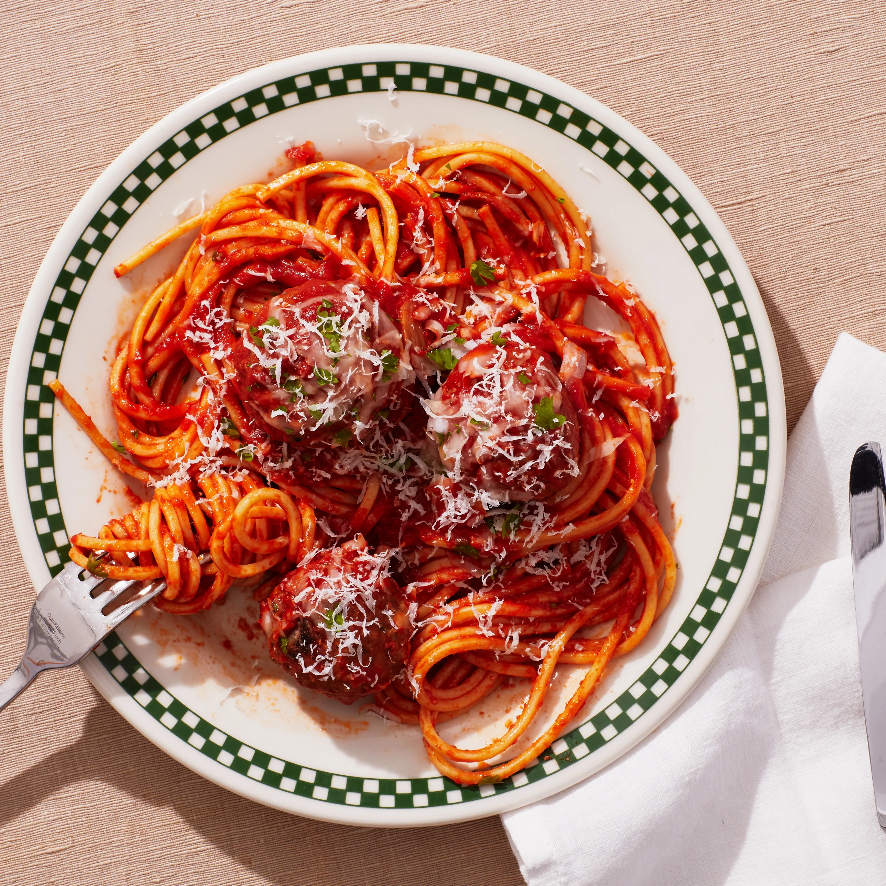

Spaghetti and Meatballs

Description
With a few time-saving tricks, spoon-tender meatballs can be yours in about an hour.
Ingredients
- ¼ cup extra-virgin olive oil, plus more
- 5 garlic cloves, sliced
- 4 tsp salt
- 50oz of tomato passata
- 1 cup whole milk
- half cup seasoned Italian breadcrumbs
- 1 large egg
- half onion
- One pound ground beef
Preparation
- Heat ¼ cup extra-virgin olive oil in a medium Dutch oven or heavy pot over medium. Add 5 garlic cloves, sliced;
season with kosher salt. Cook, stirring, until fragrant
(dont let garlic brown), about 30 seconds. Add two 24.5-oz. bottles tomato passata.
Add ½ cup water to one of the bottles, swirl around, and pour into pot. Give sauce a
good stir and bring to a vigorous simmer. Reduce heat to low, partially cover,
and simmer gently until sauce is slightly thickened, 15 to 20 minutes. Cover and keep warm.
Return